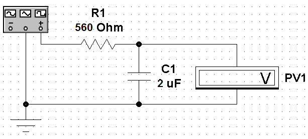
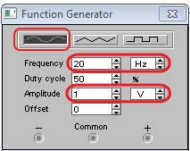
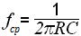

Electronics Workbench
Исследование частотных характеристик фильтров в программе
Electronics Workbench
Узнать о фильтрах можно здесь
- Запустите программу Electronics Workbench.
- Соберите для исследования модель RC-фильтра (рис. 1).

Рис. 1 - Модель RC-фильтра
- Установите свойства элементов схемы (табл. 1).
Для установки свойств:- сделайте двойной щелчок на элементе;
- откройте вкладку (Label или Value);
- установите значения.
Таблица 1
Свойства элементов схемы Обозначение
элементаВкладка Label
(Свойство:Значение)Вкладка Value
(Свойство:Значение)R1 Label: R1 Resistance (R): 560 Ω С1 Label: С1 Capacitance (C): 2 µF PV1 Label: PV1 Mode: AC - Установите параметры генератора (рис. 2):
- вид сигнала - синусоидальный;
- частота - 20 Гц;
- амплитуда - 1 В.

Рис. 2 - Параметры генератора
- Щелкните мышкой на кнопке
 в верхнем правом углу, чтобы включить схему.
в верхнем правом углу, чтобы включить схему. - Дождитесь окончательной установки показаний вольтметра.
- Щелкните мышкой на кнопке в верхнем правом углу, чтобы выключить схему.
- Запишите в рабочей тетради значение выходного напряжения для данной частоты (табл. 2).
- На генераторе установите частоту 50 Гц и запишите в рабочей тетради показания вольтметра для данной частоты.
- Определите выходные напряжения для остальных частот (табл. 2).
- По полученным данным постройте графики зависимости выходного напряжения от частоты.
- По графику определите экспериментальное значение частоты среза.
- По формуле

вычислите теоретическое значение частоты среза. - Проанализируйте полученные результаты.
Таблица 2
| № изм | 1 | 2 | 3 | 4 | 5 | 6 | 7 | 8 | 9 | 10 | 11 | 12 | 13 | 14 |
|---|---|---|---|---|---|---|---|---|---|---|---|---|---|---|
| Частота, Гц | 20 | 50 | 100 | 150 | 200 | 250 | 300 | 350 | 400 | 450 | 500 | 550 | 600 | 650 |
| Uвых, B (PV1) |